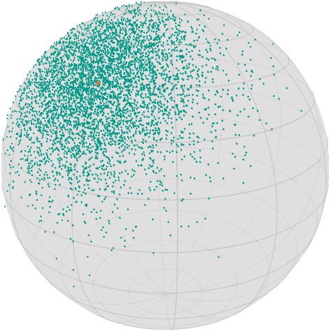

Stochastic Gradient Descent
This tutorial illustrates how to use the stochastic_gradient_descent solver and different DirectionUpdateRules in order to introduce the average or momentum variant, see Stochastic Gradient Descent.
Computationally we look at a very simple but large scale problem, the Riemannian Center of Mass or Fréchet mean: For given points $p_i ∈\mathcal M$, $i=1,…,N$ this optimization problem reads
which of course can be (and is) solved by a gradient descent, see the introductionary tutorial. If $N$ is very large it might be quite expensive to evaluate the complete gradient. A remedy is, to evaluate only one of the terms at a time and choose a random order for these.
We first initialize the manifold (see [])
using Manopt, Manifolds, Random, Colorsand we define some colors from Paul Tol
black = RGBA{Float64}(colorant"#000000")
TolVibrantOrange = RGBA{Float64}(colorant"#EE7733") # Start
TolVibrantBlue = RGBA{Float64}(colorant"#0077BB") # a path
TolVibrantTeal = RGBA{Float64}(colorant"#009988") # pointsAnd optain a large data set
n = 5000
σ = π / 12
M = Sphere(2)
x = 1 / sqrt(2) * [1.0, 0.0, 1.0]
Random.seed!(42)
data = [exp(M, x, random_tangent(M, x, Val(:Gaussian), σ)) for i in 1:n]which looks like
asymptote_export_S2_signals("centerAndLargeData.asy";
points = [ [x], data],
colors=Dict(:points => [TolVibrantBlue, TolVibrantTeal]),
dot_sizes = [2.5, 1.0], camera_position = (1.,.5,.5)
)
render_asymptote("centerAndLargeData.asy"; render = 2)
Note that due to the construction of the points as zero mean tangent vectors, the mean should be very close to our initial point x.
In order to use the stochastic gradient, we now need a function that returns the vector of gradients. There are two ways to define it in Manopt.jl: as one function, that returns a vector or a vector of funtions.
The first variant is of course easier to define, but the second is more efficient when only evaluating one of the gradients. For the mean we have as a gradient
Which we define as
F(M, x) = 1 / (2 * n) * sum(map(p -> distance(M, x, p)^2, data))
gradF(M, x) = [grad_distance(M, p, x) for p in data]
gradf = [(M, x) -> grad_distance(M, p, x) for p in data];The calls are only slightly different, but notice that accessing the 2nd gradient element requires evaluating all logs in the first function. So while you can use both gradF and gradf in the following call, the second one is faster:
@time x_opt1 = stochastic_gradient_descent(M, gradF, x); 0.299970 seconds (604.09 k allocations: 32.818 MiB, 5.86% gc time)versus
@time x_opt2 = stochastic_gradient_descent(M, gradf, x); 0.105654 seconds (211.54 k allocations: 10.873 MiB)This result is reasonably close. But we can improve it by using a DirectionUpdateRule, namely: On the one hand MomentumGradient, which requires both the manifold and the initial value, in order to keep track of the iterate and parallel transport the last direction to the current iterate. you can also set a vector_transport_method, if ParallelTransport() is not available on your manifold. Here we simply do
@time x_opt3 = stochastic_gradient_descent(
M, gradf, x; direction=MomentumGradient(M, x, StochasticGradient(zero_vector(M, x)))
); 0.175791 seconds (315.70 k allocations: 16.435 MiB, 12.14% gc time)And on the other hand the AverageGradient computes an average of the last n gradients, i.e.
@time x_opt4 = stochastic_gradient_descent(
M, gradf, x; direction=AverageGradient(M, x, 10, StochasticGradient(zero_vector(M, x)))
); 0.164723 seconds (411.93 k allocations: 21.378 MiB)note that the default StoppingCriterion is a fixed number of iterations.
Note that since you can apply both also in case of gradient_descent, i.e. to use IdentityUpdateRule and evaluate the classical gradient, both constructors have to know that internally the default evaluation of the Stochastic gradient (choosing one gradient $\operatorname{grad}f_k$ at random) has to be specified.
For this small example you can of course also use a gradient descent with ArmijoLinesearch, but it will be a little slower usually
@time x_opt5 = gradient_descent(
M, F, (M, x) -> sum(gradF(M, x)), x; stepsize=ArmijoLinesearch()
); 1.999201 seconds (9.38 M allocations: 1.026 GiB, 12.70% gc time)but it is for sure faster than the variant above that evaluates the full gradient on every iteration, since stochastic gradient descent takes more iterations.
Note that all 5 of couse yield the same result
[distance(M, x, y) for y in [x_opt1, x_opt2, x_opt3, x_opt4, x_opt5]]5-element Array{Float64,1}:
2.1073424255447017e-8
2.1073424255447017e-8
2.1073424255447017e-8
2.1073424255447017e-8
2.1073424255447017e-8